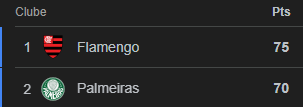
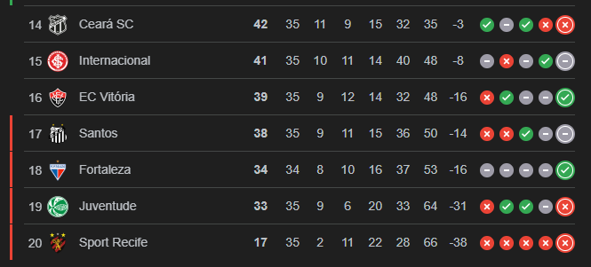

📰 Notícias Recentes
Briga pelo Tetra da Glória Eterna
Neste Sábado (29), conheceremos o primeiro Brasileiro Tetra Campeão da Copa Libertadores. Palmeiras x Flamengo duelarão em Lima-PER, no estádio Monumental.
Nos últimos 5 anos, Palmeiras e Flamengo vem dominando o Futebol Brasileiro e Sul-Americano.Retrospecto Alviverde nos últimos 6 anos:
14 finais. Venceu 9 e perdeu 5. No ano de 2025, o Palmeiras investiu quase R$ 700 milhões em seu elenco. Perdeu Campeoanto Paulista e foi eliminado na Copa do Brasil para o Corinthians, seu maior rival. No Brasileirão, vê o Flamengo com uma mão na taça. No sábado, tem uma última chance de conquistar um titulo nesta temporada. O fim de ano Palmeirense pode ser histórico ou melancólico
Retrospecto Rubro Negro nos últimos 6 anos:
20 finais, venceu 11 e perdeu 9. Com elenco recheado de estrelas, o time de Filipe Luis, teve diversas críticas no decorrer desta temporada, a expectativa da torcida de ver um Flamengo avassalador, em alguns momentos teve frustrações com a eliminação na Copa do Brasil e alguns jogos de baixo nível na temporada. Mas, com um elenco de nomes como: Arrascaeta, Jorginho, Pedro, Saul e companhia, o Flamengo chega forte para essa reta final de temporada, podendo ser campeão Brasileiro e da Libertadores.
Acompanhe esse jogaço no Sábado, com o pré jogo a partir de 16:30 e bola rolando as 18:00.
👉 Ao Vivo, na GE TVCampeonato Brasileiro
Com a derrota para o Grêmio, o Palmeiras chega a 5 jogos sem vitória. No momento mais importante da temporada, o verdão se vê em dificuldades.
Contra o Galo, o Flamengo empata o jogo de forma heróica nos acréscimos do 2º tempo.
Restando apenas 2 jogos para o fim do Campeonato Brasileiro, o Flamengo precisa somente de 2 pontos para ser campeão. Já o Palmeiras, se quiser ser campeão, tem que contar com tropeços do time Carioca

Olho no Z4
No Brasileirão, a emoção não é só pra quem disputa título, há também o confronto dos desesperados na parte de baixo da tabela. Veja:

O Ceará enfrenta: Cruzeiro, Flamengo e Palmeiras. Que são os 3 primeiros colocados do Brasileirão. Tarefa difícil pro Vozão escapar da zona da degola.
O Internacional enfrenta: Vasco, São Paulo e Bragantino. O Colorado não vem fazendo um bom ano, depende somente de si para não correr riscos. E depender de si mesmo, é o problema.
O Vitória enfrenta: Mirassol, Bragantino e São Paulo. Tarefa díficl pro frágil Vitória, que é o primeiro time fora do Z4, o time comandado por Thiago Carpini tem lampejos de bons momentos, mas ainda sofre.
O Santos enfrenta: Juventude, Sport e Cruzeiro: O alvinegro praiano teve esse ano o retorno de Neymar, que sofreu com lesões e pôlemcias. O camisa 10 já não joga mais esse ano por uma lesão no joelho esquerdo, e desfalca o Santos no momento mais difícil da temporada. apesar de jogar contra 2 clubes já rebaixado, o Santos não desempenha um bom futebol e tem que torcer para que os clubes acima não pontue. Mais um ano trágico para um dos maiores clubes do Brasil
O Fortaleza tem um jogo a menos e enfrenta: Bragantino, Atlético Mineiro, Corinthians e Botafogo: O Leão não perde há 5 jogos, ganhou 1 e empatou 4. Restrospecto abaixo, mas que pode dar um ânimo nessa reta final. Apesar de ter uma sequência complicada, o Leão luta com garras e dentes para evitar o rebaixamento
Ceará, Internacional e Vitória dependem somente de si para evitarem jogar a Serie B do Campeonato Brasileiro de 2026.
Santos e Fortaleza dependem de si e de tropeços dos clubes acima para escaparem do rebaixamento para a serie B
Champions League
Estêvão brilha, Yamal foi mal. Chelsea atropela o Barcelona, em Londres.
Temporada 2026
Estamos na reta final da temporada 2025. Confira o Calendario da temporada de 2026 e não perca nada do seu Clube do coração no proximo ano.